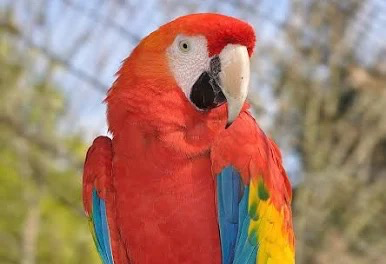

Rainbow lorakeets

The rainbow lorikeet is a medium-sized parrot. The head is deep blue with a greenish-yellow nuchal collar, and the rest of the upper parts (wings, back and tail) are deep green. The chest is red with blue-black barring. The belly is deep green, and the thighs and rump are yellow with deep green barring. In flight a yellow wing-bar contrasts clearly with the red underwing coverts.
There is little to visually distinguish between the sexes; however, to a keen observer of their colouring and behaviour, their dimorphism is readily apparent.